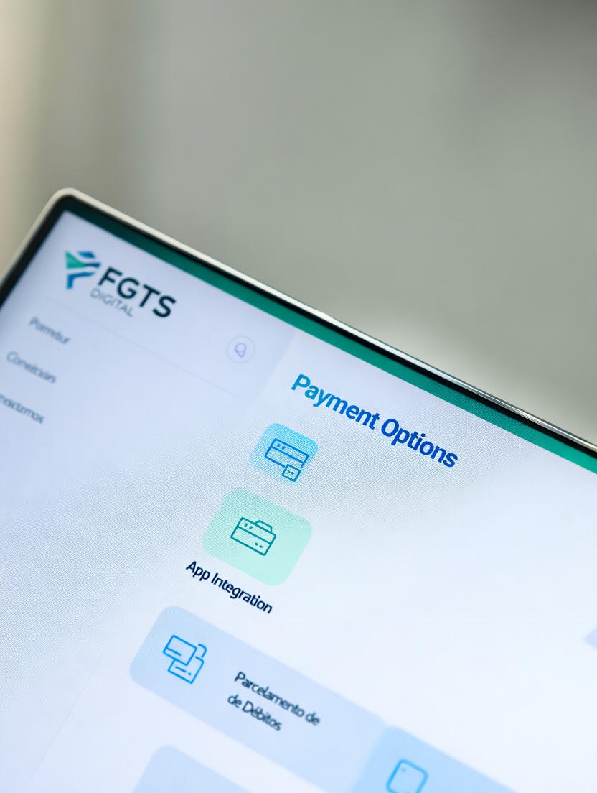

FGTS 2025: Guia Completo Para Consultar o Saldo e Entender as Regras de Saque
O Fundo de Garantia do Tempo de Serviço (FGTS) é um dos principais direitos do trabalhador brasileiro. Em 2025, novas regras e possibilidades de saque estão em vigor, e é fundamental entender como consultar seu saldo e identificar qual modalidade de saque é a mais vantajosa para você.
Como Consultar o Saldo do FGTS em 2025
Você pode consultar o saldo de diferentes formas:
- Aplicativo FGTS: disponível para Android e iOS.
- Site da Caixa: acessando com CPF e senha.
- Agências da Caixa: atendimento presencial.
Modalidades de Saque do FGTS
Em 2025, os trabalhadores podem acessar o FGTS pelas seguintes modalidades:
- Saque-Rescisão: em caso de demissão sem justa causa.
- Saque-Aniversário: retiradas anuais no mês de aniversário.
- Saque por Aposentadoria: direito ao saldo integral.
Quiz Rápido: Qual Saque do FGTS é Para Você?
Responda a estas perguntas e veja qual modalidade se encaixa no seu caso. Este é um simulador, não substitui a consulta oficial.
Perguntas Frequentes sobre o FGTS 2025
Não. É preciso escolher entre Saque-Aniversário e Saque-Rescisão, por exemplo. Cada modalidade tem suas regras.
Sim. Trabalhadores aposentados podem retirar o valor total do FGTS.